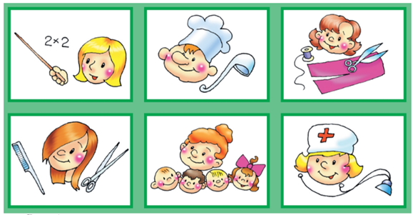

1.Игровое упражнение «Кто есть кто»
Процедура игры следующая:
1. Перед началом самой игры ведущий спрашивает у участников, какие профессии для них наиболее интересны, и выписывает эти профессии (примерно 10-15) на доске; или использует материалы анкет. Это исключит случаи, когда названная профессия будет никому не интересна, а может даже и неприятна.
2. Затем ведущий объясняет правила проведения игры: «Сейчас я буду называть профессии; каждый в течение нескольких секунд должен посмотреть на своих товарищей и определить, кому эта профессия подойдет в наибольшей степени. Затем все по команде одновременно должны показать на выбранного человека, наиболее подходящего для данной профессии».
3. Показав на своего товарища, все участники должны замереть; ведущий подсчитывает, сколько рук показывает на каждого человека, то есть чей образ, по мнению большинства игроков, в наибольшей степени соответствует данной профессии.

2.Игровое упражнение «Человек - профессия»
Основные этапы:
1. Ведущий дает инструкцию участникам: «Сейчас мы загадаем любого из сидящих в круге, а кто-то постарается отгадать этого человека. Но отгадывать он будет с помощью одного-единственного вопроса: с какой профессией ассоциируется загаданный человек. Все участники по кругу должны будут назвать наиболее подходящую для загаданного профессию. Профессии могут повторяться. После этого у отгадывающего будет возможность подумать немного (примерно 30-40 секунд) и назвать свои варианты отгадки. Интересно, какой по счету вариант будет правильным?»
2. Затем выбирается отгадывающий (лучше, если это будет по желанию) и отправляется на некоторое время в коридор, а остальные быстро и тихо выбирают любого из присутствующих. При этом загаданным может быть и сам отгадывающий.
3. Приглашается отгадывающий, садится в круг и начинает всем по очереди задавать вопрос: «С какой профессией ассоциируется загаданный человек?». Каждый должен быстро дать ответ. Ответ должен быть правильным, но в то же время не являться подсказкой.
4. После того как все дали свои варианты ассоциаций, отгадывающий берет немного времени на раздумье и начинает называть тех, кто по его мнению, в наибольшей степени соответствует названным профессиям. Если игроков немного (8-10 человек), то отгадывающий может обратиться к участникам с этим же вопросом повторно, пройти по второму кругу.
5. Обсуждение организуется следующим образом. Если кого-то назвали по ошибке, то можно спросить у него, так ли уж сильно ошибся отгадывающий? У того человека, которого загадали на самом деле, можно спросить, согласен ли он с названными профессиями, насколько они соответствуют его собственному представлению о себе. У отгадывающего можно поинтересоваться (когда он уже будет знать, кого на самом деле загадали), чьи ответы- профессии помогали, а чьи мешали ему отгадывать.

3.Игровое упражнение «Вакансии»
Ход игры:
1. Объявляется название игры и выбираются 2 пары основных участников.
2. Ведущий знакомит всех с общей инструкцией: две группы «великих кинорежиссеров» (две выбранные пары) снимают фильмы. Фильмы разные, но в каждом из фильмов есть сценка из жизни предприятия (школы, автохозяйства и т. д. - в зависимости от разбираемой в игре профессии). «Режиссерам» срочно понадобились артисты для этих сценок. Весь облик артистов должен соответствовать типичному образу хорошего рабочего (учителя, водителя и т. д. - в зависимости от конкретной игры). Выбирать артистов «режиссеры» будут из своего класса, но, чтобы сделать удачный выбор, надо знать главные качества хорошего рабочего, иметь критерии выбора. (Возможна такая организация игры, при которой определяются не требуемые качества, а те, которые явно противопоказаны для данной профессии).
Далее группы «режиссеров» выйдут в коридор и продумают критерии выбора. Через 5-7 минут каждая группа выберет для своего фильма по 2 «артиста», после чего назовет 5 самых главных качеств (или противопоказаний) хорошего рабочего (критерии своего выбора). После чего мы определим, чей выбор был более удачным.
3. Перед отправкой «режиссеров» в коридор каждой группе дается вспомогательная (письменная) инструкция, с которой они знакомятся в коридоре. Инструкция включает в себя список качеств, необходимых для данной профессии, «режиссеры» в качестве критерия отбора должны выбрать 5 основных качеств или противопоказаний. Они берут с собой бумагу и ручки, чтобы не делать пометок в инструкции.
4. Пока «режиссеры» определяют критерии выбора, ведущий проделывают такую же работу с классом. Классу зачитывается такой же перечень качеств, что и в инструкции, и предлагается выбрать из них 5 наиболее важных (или крайне нежелательных) для разбираемой профессии. При этом ведущий записывает предложения учащихся на доске. Таким образом класс вырабатывает свои критерии, с тем чтобы лучше оценить критерии «режиссерских групп». Естественно, перед приходом «режиссеров» записи с доски стираются.
5. Группы «режиссеров» по очереди входят в класс и в течение 1 минуты называют выбранных «артистов». «Артисты» при этом остаются на своих местах, а «режиссеры» сразу же называют 5 своих критериев выбора. Если окажется, что одного человека выбрали обе группы, он в выборах больше не участвует, а группы выбирают себе другого «артиста». Дважды выбранному ученику ведущий может сделать комплимент.
6. Для оценки более удачных критериев выбора все варианты критериев (двух групп «режиссеров» и класса) могут быть выписаны на доске, после чего можно устроить небольшое (5-7 минут) обсуждение. Каждая группа соглашается с тем, что другие критерии более удачны, или отстаивает свой вариант. Чтобы спор не затягивался, решающее слово может сказать ведущий.
7. При наличии достаточного количества времени можно играть не с двумя командами, а с тремя и даже четырьмя. В этом случае в игре будет участвовать большее количество школьников.

4.Игровое упражнение «А вот и я»
Ход игры:
1. Каждый участник на отдельном листочке выписывает 5-7 главных правил поведения для поступающего и 5-7 главных правил проведения беседы для члена приемной комиссии, которые позволили бы ему не ошибиться при выборе претендента. На это отводится примерно 5-7 минут.
2. Ведущий предлагает двум игрокам в течение 7-10 минут разыграть сценку собеседования. Сразу же уточняется, кто будет играть претендента на вакантное место, а кто - руководителя учреждения. Желательно, чтобы вакантное место было достаточно престижным, но в то же время реальным для трудоустройства. Уточнить это должен игрок, которому досталась роль руководителя. Другой игрок - претендент на вакантное место - сразу же уточняет, какими основными качествами обладает его герой, например, указывает его возраст, пол, образование, жизненный опыт.
3. Во время разыгрывания сценки остальные участники внимательно наблюдают за действиями игроков, отмечая для себя, насколько их действия соответствуют выписанным на их листочках правилам поведения для руководителя и претендента.
4. После разыгрывания ситуации слово дается главным игрокам. Они оценивают себя, соотнося свои действия с выписанными ранее правилами поведения. Затем могут высказаться и остальные участники. Желательно завершить первое обсуждение за 5-7 минут.
5. Перед тем как начать общую игру, ведущий может зачитать основные правила для человека, желающего произвести хорошее впечатление, и для руководителя, который не хочет ошибиться в своем выборе.
Например, чтобы понравиться другим людям, можно ориентироваться на правила, выделенные Д. Карнеги:
- искренне интересуйтесь другими людьми;
- улыбайтесь;
- помните, что имя человека - это самый сладостный и самый важный для него звук на любом языке;
- будьте хорошим слушателем, поощряйте других говорить о себе;
- говорите о том, что интересует вашего собеседника;
- внушайте вашему собеседнику сознание его значительности и делайте это искренне.
Для руководителей можно порекомендовать следующее:
- не поддаваться первому впечатлению от внешности претендента (важнее для работы все-таки деловые качества).
- не переоценивать «красноречие» претендента, которое не всегда свидетельствует об организаторских способностях;
- не переоценивать различные /дипломы «с отличием» (они вполне могут быть «купленными» или полученными без особого труда);
- при первой встрече следует поменьше говорить самому руководителю и побольше слушать претендента;
- даже если претендент поначалу и не произвел впечатления, не следует ему отказывать сразу; можно вежливо предложить ему позвонить через несколько дней;
- руководитель должен хорошо сам понимать, какой же работник ему нужен (хотя бы примерно представлять, какими качествами и характеристиками он должен обладать, чтобы хорошо выполнять работу или обучаться по конкретной специальности).
6. После этого ведущий предлагает выйти следующему добровольцу на более сложную и интересную роль - претендента, беседующего с приемной комиссией.
7. Доброволец сам определяет, в какое учебное заведение и на какую специальность он собирается поступать, а также кратко называет основные характеристики своего «героя».
8. Роль членов приемной комиссии будут играть все остальные участники. При этом, для большей остроты игры, все делятся на две команды, то есть беседовать с претендентом будет не одна, а сразу две приемные комиссии на конкурсной основе. Каждая комиссия располагается за отдельным столом. Члены комиссий будут по очереди задавать претенденту различные вопросы, а он должен сразу же на них отвечать. Примерно через 5-7 минут таких вопросов-ответов члены комиссий должны будут на листочках по
5-балльной шкале оценить, насколько готов претендент к зачислению в их организацию. После этого в каждой команде (комиссии) проводится небольшое обсуждение и быстро подсчитывается средний балл готовности претендента (по баллам, проставленным в листочках).
9. Наконец, проводится итоговое обсуждение. Если у приемных комиссий разные мнения, то организуется небольшая дискуссия как между командами-комиссиями, так и между отдельными игроками. Общим итогом игры могут стать совместно разработанные и уточненные правила поведения для претендента и для руководителя (члена приемной комиссии).

-
5.Визуально-рефлексивное упражнение "Призвание" -
Цель: образная рефлексия актуальной потребности профессиональных достижений.
Ведущий предлагает участникам подумать над понятием «призвание». Что это такое? Как призвание может быть проявлено в жизни человека? Как найти свое призвание? Что (или кто) человека может «призывать»?
Далее предлагается визуализировать образ того, что каждого участника «призывает». Где это находится? На что (на кого) похоже? Какое это время года? Время дня? Какие слышны звуки? Запахи? Что каждый участник чувствует? Видит? Слышит? Ощущает? Предчувствует?
Далее следует обмен впечатлениями и обсуждение результатов визуализации в группе. 
-
6.Профориентационная игра "Ассоциативный эксперимент" -
Для начала каждый участник (включая ведущего) называет одну любую профессию. Кто-то из ребят может стесняться своего выбора, поэтому ведущий специально отмечает, что называть не обязательно ту профессию, которую выбрал. Просто пусть называются профессии, о которых участникам интересно было бы порассуждать. Этот список профессий ведущий фиксирует у себя в блокноте (дважды одна профессия не записывается). Далее ведущий по очереди называет эти профессии, участники должны назвать эмоции и чувства, которые эта профессия у них вызывает. Для одной профессии один участник может назвать только одну эмоцию или чувство. Ведущий подчеркивает, что надо сначала представить себя в качестве обладателя данной профессии, а потом уже называть эмоции или чувства, которые приходят на ум.
Ведущий на листе ватмана фиксирует каждое упоминание той или иной эмоции. Например:
Радость |||
Удивление ||
Интерес ||||
Скука ||||||
Любовь ||
Ненависть |||
Воодушевление |
Горе |
Если участники называют две синонимичные эмоции, например "радость" и "счастье", их лучше объединить в одну. Ведущий тоже называет своим эмоции и чувства – в основном для того, чтобы разбавить лексикон игры.
В конце происходит обсуждение:
– Почему такая-то эмоция упоминалась чаще всего? – Может ли быть такая профессия, которая вообще не задевает чувств или эмоций человека? – Почему вообще разные профессии у нас вызывают разные эмоции? 
-
7.Профориентационная игра "Забавные профессии" -
Содержание
Каждый участник самостоятельно придумывает какую-то новую профессию. Для этого он берет две уже существующие профессии (например, "врач" и "водитель") и объединяет их в одну новую (например, "врач-водитель" или "водитель-врач").
Автор идеи представляет выдуманную профессию другим участникам, вкратце описывает характер работы "новых специалистов". Например, "врач-водитель" это может быть что-то вроде таксиста, который параллельно оказывает медицинскую помощь. Или "фотограф-строитель": он строит дома по фотографиям или строит и одновременно фотографирует.
Каждую такую вымышленную забавную профессию следует довольно хорошо проанализировать, делая упор на то, какие именно операции будет совершать "новый профессионал".
В конце проводится обсуждение:
– чья профессия вам показалась наиболее забавной? – какая профессия может быть наиболее востребованной? наименее? – почему таких профессий до сих пор нет? – вы бы сами какую профессию выбрали из тех, что мы сегодня придумали? 
-
8.Профориентационная игра "Яркие впечатления" -
Содержание
Ведущий разбивает участников тренинга на группы по три или четыре человека. Желательно, чтобы во всех группах было равное количество участников. Группы устраиваются в разных углах тренингового зала, так, чтобы не мешать друг друг.
Дается задание: каждая группа должна выбрать ту или иную профессию. Выбирать можно не "первую попавшуюся", а ту, которая, как кажется членам микрогруппы, является самой захватывающей с точки зрения впечатлений:
- представители этой профессии по своему роду деятельности постоянно получают новые волнующие впечатления, - некоторые такие впечатления такие яркие, что врезаются в память на всю жизнь, - такими впечатлениями хочется и хочется делиться с окружающими, но не всегда это получается.
адача каждой микрогруппы: выбрать самую захватывающую профессию и представить ее всему коллективу. Ведущий сразу оговаривает, что в конце голосованием будет решено, какая профессия самая волнующая.
Презентовать свою профессию микрогруппы могут по-разному. Кто-то может разыграть сценку из профессиональной деятельности. Кто-то, имея талант рассказчика, просто может поведать свои соображения о том, почему эта профессия кажется самой захватывающей. Ведущий предлагает, чтобы во время каждой презентации было вкратце описано, с каким вообще впечатлениями имеет место тот или иной профессионал, а потом уже в деталях изобразить какую-то очень яркую подробность.
Время на подготовку дается около десяти-пятнадцати минут. Если ведущий сочтет нужным, участникам может быть предоставлена возможность пользоваться ватманом, карандашами, красками и т.п. В этом случае время на подготовку можно увеличить.
Микрогруппы делают свои презентации. Ведущий выписывает на доске профессии, которые были представлены. После завершения последнего представления устраивается голосование: опрашиваются участники (уже по одному), которые должны выбрать по две профессии из записанных на доске - самые захватывающие с точки зрения впечатлений. Обычно одна галочка ставится за "свою" профессию (которую участник презентовал), а вторая - за иную.
Ведущий подсчитывает галочки, объявляется профессия-победитель. Участников этой микрогруппы можно наградить каким-нибудь символическим подарком. 

5.Визуально-рефлексивное упражнение "Призвание"
Цель: образная рефлексия актуальной потребности профессиональных достижений.
Ведущий предлагает участникам подумать над понятием «призвание». Что это такое? Как призвание может быть проявлено в жизни человека? Как найти свое призвание? Что (или кто) человека может «призывать»?
Далее предлагается визуализировать образ того, что каждого участника «призывает». Где это находится? На что (на кого) похоже? Какое это время года? Время дня? Какие слышны звуки? Запахи? Что каждый участник чувствует? Видит? Слышит? Ощущает? Предчувствует?
Далее следует обмен впечатлениями и обсуждение результатов визуализации в группе.
6.Профориентационная игра "Ассоциативный эксперимент"
Для начала каждый участник (включая ведущего) называет одну любую профессию. Кто-то из ребят может стесняться своего выбора, поэтому ведущий специально отмечает, что называть не обязательно ту профессию, которую выбрал. Просто пусть называются профессии, о которых участникам интересно было бы порассуждать. Этот список профессий ведущий фиксирует у себя в блокноте (дважды одна профессия не записывается). Далее ведущий по очереди называет эти профессии, участники должны назвать эмоции и чувства, которые эта профессия у них вызывает. Для одной профессии один участник может назвать только одну эмоцию или чувство. Ведущий подчеркивает, что надо сначала представить себя в качестве обладателя данной профессии, а потом уже называть эмоции или чувства, которые приходят на ум.
Ведущий на листе ватмана фиксирует каждое упоминание той или иной эмоции. Например:
Радость |||
Удивление ||
Интерес ||||
Скука ||||||
Любовь ||
Ненависть |||
Воодушевление |
Горе |
Если участники называют две синонимичные эмоции, например "радость" и "счастье", их лучше объединить в одну. Ведущий тоже называет своим эмоции и чувства – в основном для того, чтобы разбавить лексикон игры.
В конце происходит обсуждение:
– Почему такая-то эмоция упоминалась чаще всего? – Может ли быть такая профессия, которая вообще не задевает чувств или эмоций человека? – Почему вообще разные профессии у нас вызывают разные эмоции?
7.Профориентационная игра "Забавные профессии"
Содержание
Каждый участник самостоятельно придумывает какую-то новую профессию. Для этого он берет две уже существующие профессии (например, "врач" и "водитель") и объединяет их в одну новую (например, "врач-водитель" или "водитель-врач").
Автор идеи представляет выдуманную профессию другим участникам, вкратце описывает характер работы "новых специалистов". Например, "врач-водитель" это может быть что-то вроде таксиста, который параллельно оказывает медицинскую помощь. Или "фотограф-строитель": он строит дома по фотографиям или строит и одновременно фотографирует.
Каждую такую вымышленную забавную профессию следует довольно хорошо проанализировать, делая упор на то, какие именно операции будет совершать "новый профессионал".
В конце проводится обсуждение:
– чья профессия вам показалась наиболее забавной? – какая профессия может быть наиболее востребованной? наименее? – почему таких профессий до сих пор нет? – вы бы сами какую профессию выбрали из тех, что мы сегодня придумали?
8.Профориентационная игра "Яркие впечатления"
Содержание
Ведущий разбивает участников тренинга на группы по три или четыре человека. Желательно, чтобы во всех группах было равное количество участников. Группы устраиваются в разных углах тренингового зала, так, чтобы не мешать друг друг.
Дается задание: каждая группа должна выбрать ту или иную профессию. Выбирать можно не "первую попавшуюся", а ту, которая, как кажется членам микрогруппы, является самой захватывающей с точки зрения впечатлений:
- представители этой профессии по своему роду деятельности постоянно получают новые волнующие впечатления, - некоторые такие впечатления такие яркие, что врезаются в память на всю жизнь, - такими впечатлениями хочется и хочется делиться с окружающими, но не всегда это получается.
адача каждой микрогруппы: выбрать самую захватывающую профессию и представить ее всему коллективу. Ведущий сразу оговаривает, что в конце голосованием будет решено, какая профессия самая волнующая.
Презентовать свою профессию микрогруппы могут по-разному. Кто-то может разыграть сценку из профессиональной деятельности. Кто-то, имея талант рассказчика, просто может поведать свои соображения о том, почему эта профессия кажется самой захватывающей. Ведущий предлагает, чтобы во время каждой презентации было вкратце описано, с каким вообще впечатлениями имеет место тот или иной профессионал, а потом уже в деталях изобразить какую-то очень яркую подробность.
Время на подготовку дается около десяти-пятнадцати минут. Если ведущий сочтет нужным, участникам может быть предоставлена возможность пользоваться ватманом, карандашами, красками и т.п. В этом случае время на подготовку можно увеличить.
Микрогруппы делают свои презентации. Ведущий выписывает на доске профессии, которые были представлены. После завершения последнего представления устраивается голосование: опрашиваются участники (уже по одному), которые должны выбрать по две профессии из записанных на доске - самые захватывающие с точки зрения впечатлений. Обычно одна галочка ставится за "свою" профессию (которую участник презентовал), а вторая - за иную.
Ведущий подсчитывает галочки, объявляется профессия-победитель. Участников этой микрогруппы можно наградить каким-нибудь символическим подарком.